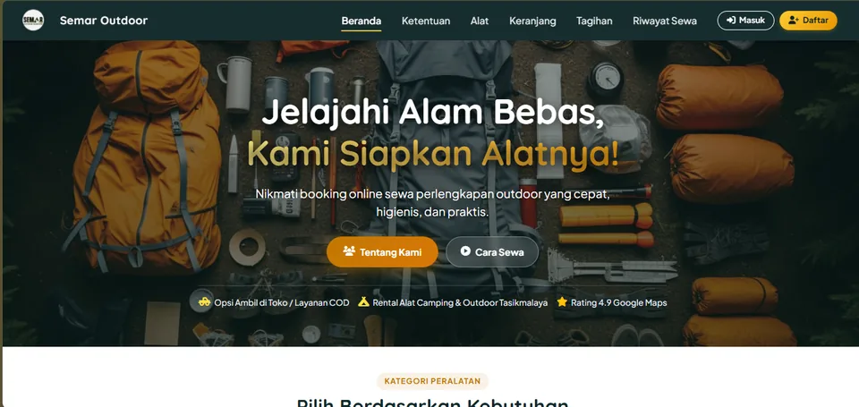
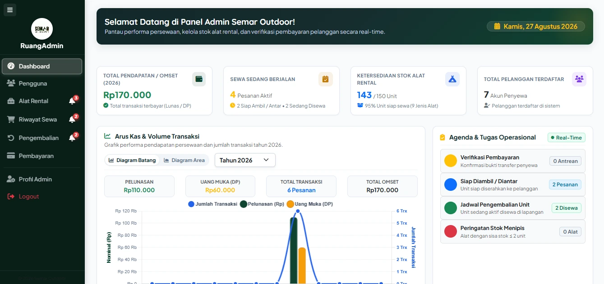
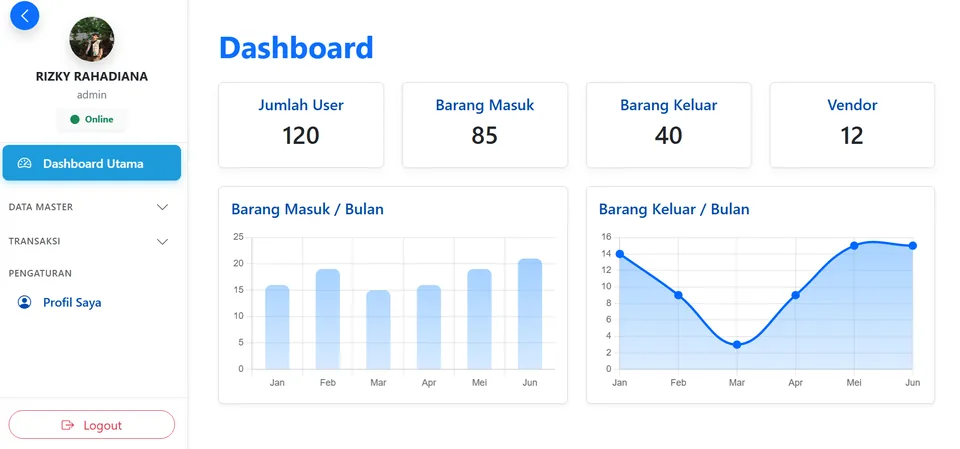
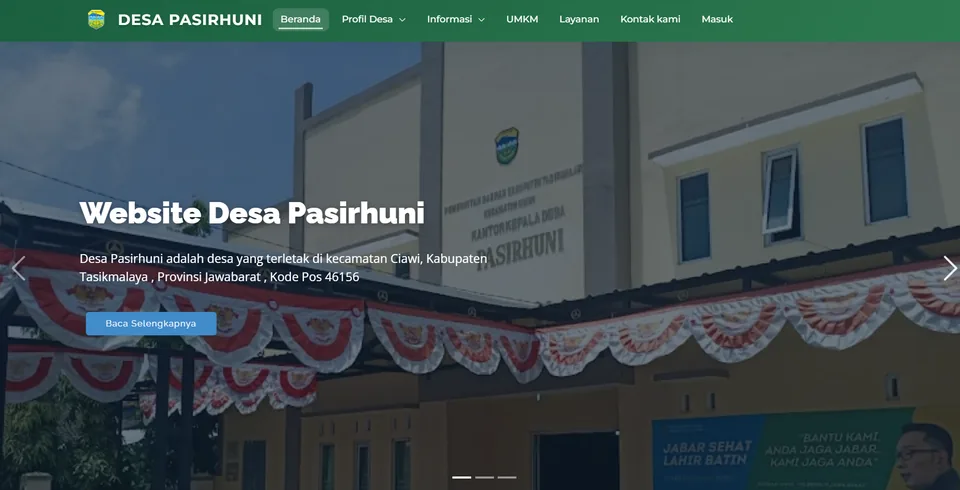
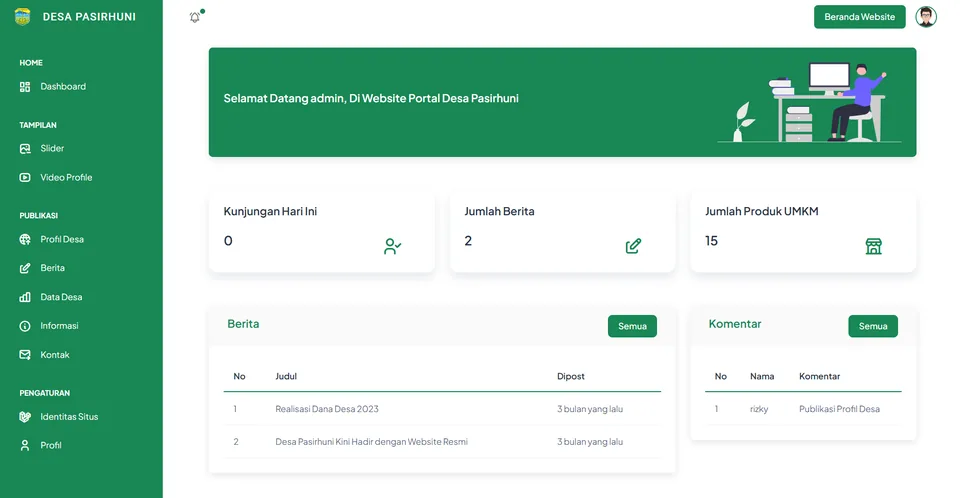
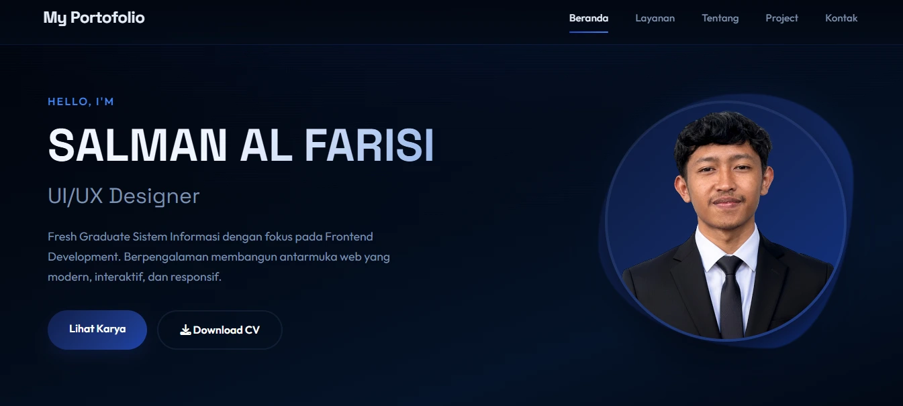

Web Development
Mengembangkan antarmuka website modern menggunakan HTML, CSS, JavaScript, dan framework kekinian dengan struktur kode yang rapi dan responsif.
Lulusan S1 Sistem Informasi yang tertarik pada pengembangan website, aplikasi digital, dan desain visual. Senang membangun solusi digital yang fungsional, responsif, dan mudah digunakan.
Mengembangkan antarmuka website modern menggunakan HTML, CSS, JavaScript, dan framework kekinian dengan struktur kode yang rapi dan responsif.
Memiliki ketertarikan pada desain visual dan pembuatan konten digital, termasuk menggunakan Canva, Figma untuk menyajikan informasi secara menarik.
Memastikan tampilan website beradaptasi dengan sempurna di berbagai ukuran layar, mulai dari smartphone hingga desktop.
Saya Salman Al Farisi, lulusan S1 Sistem Informasi Universitas Cipasung Tasikmalaya. Saya memiliki ketertarikan pada pengembangan website, aplikasi digital, dan desain visual.
Saya telah mengerjakan beberapa proyek, di antaranya website rental alat outdoor sebagai proyek skripsi, website inventaris gudang Perumda Tirta Sukapura saat magang, serta website Desa Pasirhuni dalam kegiatan KKN.
Melalui proyek-proyek tersebut, saya terus mengembangkan kemampuan teknis, pemecahan masalah, dan pemahaman dalam membangun solusi digital. Saya terbuka terhadap kesempatan kerja, kolaborasi, dan pengalaman baru untuk terus berkembang di bidang teknologi informasi.
Merancang arsitektur basis data relasional dan mengembangkan aplikasi web penyewaan alat outdoor secara end-to-end untuk mengotomatisasi pemesanan, validasi transaksi, perhitungan biaya sewa, dan ketersediaan stok.
Mengimplementasikan logika backend dan antarmuka responsif menggunakan PHP Native, MySQL, HTML5, CSS3, JavaScript, dan Bootstrap.
Melaksanakan instalasi router, konfigurasi jaringan nirkabel (WiFi), serta penarikan kabel LAN dan fiber optik secara mandiri untuk konektivitas pelanggan yang stabil.
Mendiagnosis dan menyelesaikan gangguan teknis jaringan (troubleshooting) serta melakukan pemeliharaan berkala.
Merancang dan membangun sistem informasi inventaris gudang berbasis web menggunakan Laravel (MVC) dan MySQL dengan fitur CRUD, pemantauan stok real-time, serta laporan otomatis.
Mendigitalisasi administrasi logistik gudang dari pencatatan manual menjadi sistem terkomputerisasi yang terintegrasi.
Mengembangkan portal website informasi publik desa secara Full Stack menggunakan Laravel dan MySQL untuk akses profil desa, berita kegiatan, serta layanan administrasi masyarakat.
Membangun modul CMS dengan hak akses terstruktur agar perangkat desa dapat mengelola konten secara mandiri.

Aplikasi penyewaan alat outdoor berbasis web untuk pemesanan, cek ketersediaan stok, dan perhitungan biaya sewa.

Panel pengelolaan data alat, validasi transaksi penyewaan, dan pemantauan status sewa secara terpusat.

Sistem informasi inventaris Perumda Tirta Sukapura untuk pencatatan barang masuk/keluar, vendor, dan grafik stok.

Portal publik desa untuk menyajikan profil desa, berita kegiatan, UMKM lokal, dan layanan informasi warga.

CMS administrasi desa untuk mengelola berita, produk UMKM, data desa, komentar, dan identitas portal.

Eksperimen tata letak landing page responsif dengan fokus pada hierarki visual, tipografi, dan interaksi ringan.
Silakan isi formulir di samping atau hubungi saya melalui kontak di bawah ini untuk kolaborasi.